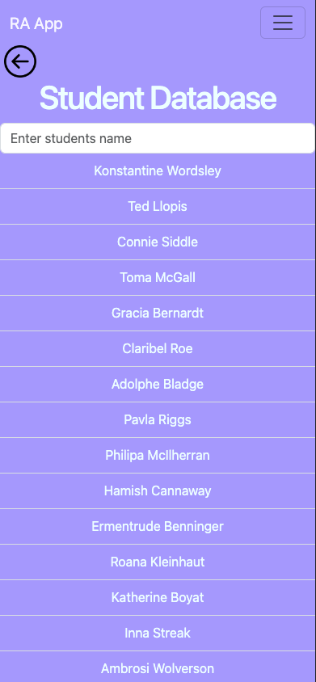
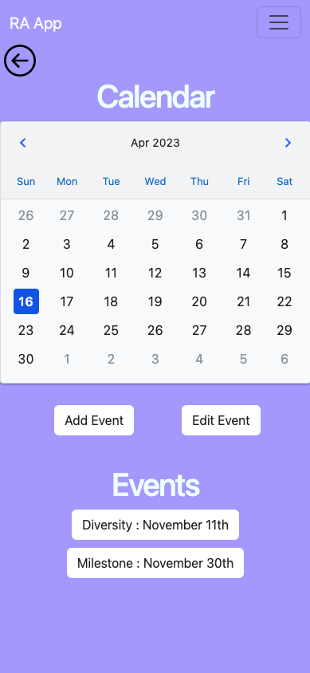
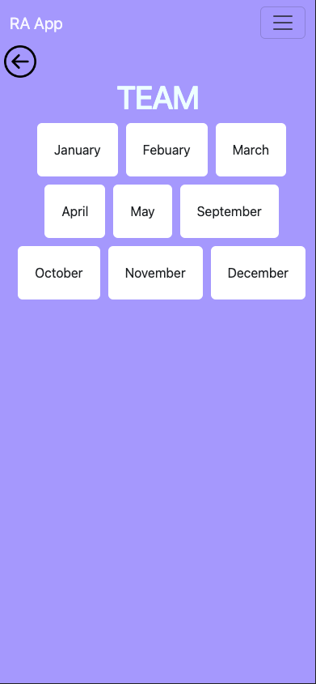
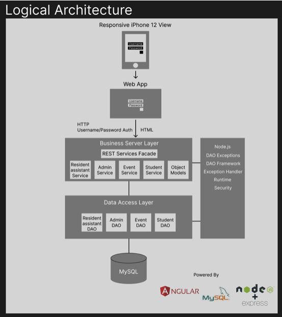
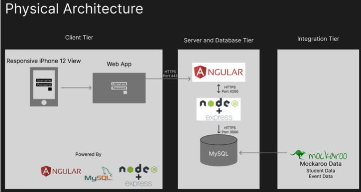

Overview
The Resident Assistant App is a web application that resident assistants can use to manage their residents, make events, and see personal tasks they must fulfill for their job.
The main features of the web application are the student database, a calendar to hold the events as well as displays and active calendar, and a team feature where the resident assistant can see their task list for each school month.
The web application is built to be in a responsive iPhone 12 view in Chrome Developer Tools.
Solving a problem
Resident assistants at GCU have multiple platforms and third-party resources to do tasks in their job, having everything in one platform would be optimal for the assistant and the director.
Making this web app would also tie the resident assistant team tighter with communication and them to know when events and tasks are due without having to reach out to individuals on their team, overall pushing productivity.
Architecture Design


The approach taken with this app was to build it as if it was a mobile app. Using the Chrome Developer Tools as a base, the rest of the app was built around it using Bootstrap as a responsive style and all of the other technologies being connected after that.
Challenges and Pending Issues
A challenge that I had to endure during the whole process of building this app was time. I had a lot of other responsibilites in school and outside in my personal life. A way I managed to get my app done in time and succeed was to keep a burn down chart amd track all of
my work and hours that were needed to complete the project. Another challenge I had to face was learning Angular and the overall Javascript/Typescript in a short period of time. I was able to learn a lof it with outside resource and books.
The Resident Assistant app is almost 100% functional. During development, I ran into some challenges with the calendar feature, but after coding and testing, I was able to out source the actual calendar.
However, we would like to acknowledge that the event edit and delete function is not currently working as intended there are a few bugs that could still bne worked out to make the app work at its full intentions.